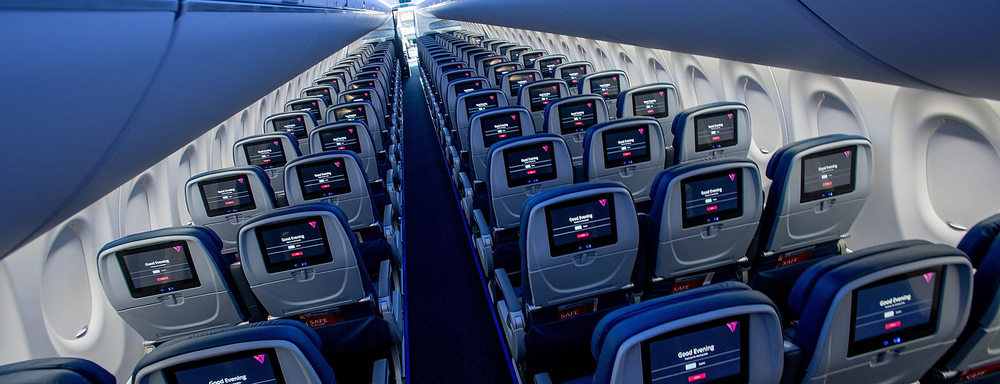

Writing a CV That Gets You Called Back
What recruiters actually read in the first eight seconds, what quietly gets you eliminated, and how to structure one page so the right things land first.
9 min read
Read Guide

Everything you need to know about building a career in aviation — written plainly, with the detail that actually changes the outcome. Free, and always will be.
Our most-read guide, and the one most people wish they had read before their first application.
How to prepare, what to expect at every stage, and what airlines are really looking for — from the online application through the open day, the group exercises and the final interview.
Showing all 7 guides
What recruiters actually read in the first eight seconds, what quietly gets you eliminated, and how to structure one page so the right things land first.
Inside knowledge from people who have been there: the report, the briefing, and the small habits that make the first rotation far less daunting.
From the moment you queue outside, you are being observed. The running order of a typical assessment day, how the group exercise is scored, and where candidates are usually cut.
Realistic timelines, what a talent pool actually means, the checks that follow an offer — and the one request at this stage that should always stop you cold.
The part of the job that surprises new joiners most is the calendar. How rosters are built, what reserve really means, and how crew protect their rest.
Promotion in the cabin is rarely about who is loudest on a layover. What actually gets noticed, and how to build the record that supports a step up.
Published in advance, assessed on the day, and entirely learnable. What the standards cover, why they exist, and how to meet them exactly.
Cabin crew recruitment is a process, not a single conversation. Airlines are assessing one thing throughout: can this person be trusted with a cabin full of passengers on the worst day of the operation, while still making it feel effortless? Every stage below is a different way of asking that question.
The first filter is usually automated or scanned quickly by a recruiter. Complete every field, use the airline's own wording for the role, and make sure your contact details are correct — more good candidates are lost to a mistyped email address than anyone would like to admit. Upload documents in the exact format requested. If a photograph is asked for, follow the stated specification precisely; it is the first test of whether you can follow a written instruction.
You will normally be observed from the moment you arrive. Expect a short presentation, a height and reach check at some airlines, a group activity, and one or more short interviews. Recruiters are watching how you behave when you are not being addressed: whether you talk to the person next to you, whether you interrupt, whether you stay warm when the day runs late.
These are not won by dominating. The behaviours that score are: bringing quieter people into the discussion, keeping the group on time, summarising where the group has got to, and disagreeing without friction. If you say nothing for ten minutes you are invisible; if you speak over people you are a safety risk in a briefing room.
Expect competency questions — "tell me about a time when…" — and answer them with structure: the situation, what you personally did, and the result. Keep each answer to about ninety seconds. Prepare examples for these themes in advance, because almost every airline draws from them:
A cabin crew recruiter may look at several hundred CVs for one intake. Yours is not being read — it is being scanned, quickly, for evidence that you are safe, presentable, reliable and good with people. Everything on the page should serve that.
"Responsible for customer service" tells a recruiter nothing. "Handled 120+ customers per shift in a flagship store; resolved complaints at the counter without escalation" tells them how you behave when someone is unhappy. Where you can, attach a number: volume, satisfaction score, team size, languages used.
You do not need aviation experience to be hired. Hospitality, retail, healthcare, teaching, call centres and childcare all demonstrate the same core skills: service under pressure, safety awareness, patience, and dealing with people who are tired, late, unwell or frightened. Frame your experience in those terms and it stops looking unrelated.
Training ends, the wings go on, and then you are standing at a crew room door at four in the morning with a bag you packed three times. Here is what the first day actually feels like, and what makes it easier.
You will arrive far earlier than you think is necessary, and you should. Report time is not "arrive at the airport" — it is being in the briefing room, in full uniform, documents and manuals with you, ready to speak. Being late to report is one of the few things that genuinely follows a new joiner around.
The senior will run through the flight, the crew positions, and safety and security questions. Expect to be asked something technical — door operation, equipment locations, medical procedures. It is not designed to embarrass you. Answer plainly, and if you do not know, say so and then go and find out.
How physical it is. How quickly the cabin becomes ordinary. How much of the job is noticing — a seat belt, a smell, a passenger who has gone quiet. And how completely the day ends when the doors open: whatever happened, the next crew has a fresh one.
Most new crew prepare hard for the interview and not at all for the calendar. Understanding how your month is built is what makes the lifestyle sustainable.
Rosters are published for a period — commonly a month — and are shaped by flight time limitations, minimum rest requirements and the airline's bidding or allocation system. Some airlines let you bid for trips or days off by seniority; others allocate. Either way, the published roster is a starting point: disruption, sickness and delays change it.
On reserve you are available to be called for a duty within a defined window — at home or at the airport, depending on the airline. It is the part of the job people find hardest at first, because a quiet day is not quite a day off. Crew who cope well with reserve tend to do the same things: they stay packed, they stay rested as if a call is coming, and they make plans that can be cancelled without disappointment.
Progression in the cabin is usually a combination of time, record and readiness. You control two of those three, and the third arrives faster than you expect.
Keep your own log: commendations, incidents you handled, languages used on the line, extra duties, training completed. When a promotion board or an internal application appears, you will have specifics rather than impressions. Ask a senior you respect for honest feedback once or twice a year, and act on one thing from it.
Senior crew and purser roles are the visible path, but they are not the only one. Cabin crew regularly move into training and standards, recruitment, safety and emergency procedures, inflight product, crew scheduling, ground operations management and corporate roles. The operational credibility of having worked the cabin is valued across all of them.
Join the community and get new career guides and hiring updates by email. Free, and easy to leave.